Chapter 7 利用R語言進行非監督式機器學習
課程簡介
課程簡介
學習目標
運用探索性資料分析
7.1 資料探勘的定義
資料探勘 (Data Mining)是利用電腦演算法發掘大量資料中蘊藏的規律性、樣式或知識，以幫助人們了解與說明資料的特性或者應用規律性與樣式來預測新的資料，這些規律性與樣式以人的認知能力通常並不容易發現。一般來說，資料探勘的任務目的包括預測(prediction)、關連(association)、集群(clustering)、異常偵測(anomaly detection)等等。
預測是根據蒐集的Observation資料特徵建立一個模型(model)，來判斷新的Observation可能的資訊，蒐集的Observation一般稱為訓練集(training set)資料。預測的資訊可能是新Observations上的某一個未知數值或是實體所屬的類別，當預測的目的是判斷Observations的類別時，這種資料探勘任務又稱為分類(classification)。比較著名的預測例子，根據天氣預報資料以及地區以往雨具銷售情形，判斷未來一段時間內的雨具銷售。又如垃圾郵件偵測，便是從一些已經標示為垃圾郵件與非垃圾郵件的文字資料訓練出模型來判斷新進郵件是否為垃圾郵件。
關連是發現在訓練資料中經常一起出現的特徵，最有名的例子便是運用購物籃分析(market basket analysis)發現啤酒與尿布的關連。
集群是根據Observations之間的相似性(或者距離)，找出一種將Observations劃分成若干群的方式，盡可能使得群內的Observations彼此間的相似性大於任何群外的Observations (或是彼此間的距離小於群外的距離)。相關的例子有根據詞語的上下文資訊找出語意相關的詞語集群。 (舉例而言，政治、經濟、財稅金融、影視娛樂、運動或者醫療健康等相同文類的詞語它們彼此的上下文資訊應當很相像，但和其他文類的詞語會有相當不同的上下文資訊，因此可以依據上下文資訊對詞語進行集群分析。未來會有一章專門介紹詞語的集群分析。)
異常偵測則是發現某一些Observations，其資料特性與其他多數者明顯不同。例如從信用卡的交易資料中發現盜刷的交易，或是找出健保詐騙的醫療處方箋。
7.1.1 資料探勘的步驟
資料探勘的目的可以定義為一個從資料庫中發現知識的過程 (Knowledge Discovering in Databases, KDD)，依據Fayyad等人於1996年提出的構想，整個KDD過程包括
- 選取資料
- 資料的清除與整理等前處理
- 轉換資料為有效描述和預測的特徵
- 運用機器學習(machine learning)的技術建立資料模型 (狹義的資料探勘)
- 解釋與應用
7.1.2 資料探勘的分類
資料探勘的過程中運用機器學習的技術，可以依據是否有一部份資料中加入人類判斷、用來做為預測其他資料的訊息大致區分成監督式學習(supervised learning)和非監督式學習(unsupervised learning)。以上述的應用而言，預測大多屬於監督式學習，而集群則一般認為是非監督式學習。本章介紹非監督式學習中的集群分析。
7.1.3 集群分析
如前所言，集群分析是根據資料的特性，設法找到一個可以良好地將彼此相似性。
集群分析的演算法非常多，如
- K-means
- EM (expectation-maximization)
- AHC (agglomerative hierarchical clustering, 聚合式階層集群)
- DBSCAN
- AP (affinity propagation) …
本節將利用AP演算發，對台鐵各站點，依照進出站人數統計資料的相似性，進行集群分析。
7.2 以進出站人數統計資料對臺鐵各站點進行集群分析
7.2.1 載入相關套件
首先載入輸入與處理資料的相關套件，因為臺鐵的資料多為JSON型式，所以載入JSON處理相關套件jsonlite。
library(tidyverse)
library(lubridate)
library(jsonlite)7.2.2 讀取資料
讀取臺鐵的每日各站點進出人數資料。
df <- fromJSON("https://ods.railway.gov.tw/tra-ods-web/ods/download/dataResource/8ae4cabf6973990e0169947ed32454b9")查看資料型態
summary(df)## trnOpDate staCode gateInComingCnt
## Length:23796 Length:23796 Length:23796
## Class :character Class :character Class :character
## Mode :character Mode :character Mode :character
## gateOutGoingCnt
## Length:23796
## Class :character
## Mode :character將trnOpDate改變為日期資料型態，gateInComingCnt和gateOutGoingCnt則分別改為numeric資料型態。
df <- df %>%
mutate(trnOpDate=ymd(trnOpDate)) %>%
mutate(gateInComingCnt=as.numeric(gateInComingCnt)) %>%
mutate(gateOutGoingCnt=as.numeric(gateOutGoingCnt))因為出入站資料僅有包含站點編號，所以從另外一個開放資料車站基本資料集，讀取站點名稱資料。
site.df <- fromJSON("http://ods.railway.gov.tw/tra-ods-web/ods/download/dataResource/0518b833e8964d53bfea3f7691aea0ee")將進出站點資料加入站點名稱。
df <- df %>%
left_join(select(site.df, staCode=stationCode, staName=stationName))是否有站點資料缺少站點名稱？
df[is.na(df$staName),]刪除沒有站點名稱的資料
df <- df %>%
filter(!is.na(staName))7.2.3 查看資料的樣貌與修改可能的錯誤
畫出台北進出站人數範圍
df %>%
filter(staName=="臺北") %>%
rename(In=gateInComingCnt, Out=gateOutGoingCnt) %>%
gather(key=IO, value=Count, -staName, -staCode, -trnOpDate) %>%
ggplot() +
geom_line(aes(x=trnOpDate, y=Count, color=IO)) +
scale_y_continuous(limits=c(0, 90000), breaks=seq(0, 90000, 10000)) +
labs(x="日期", y="進出站人數", color="進出") +
theme(panel.background = element_blank(),
axis.line = element_line(color="grey20"),
panel.grid.major = element_line(color="grey90"))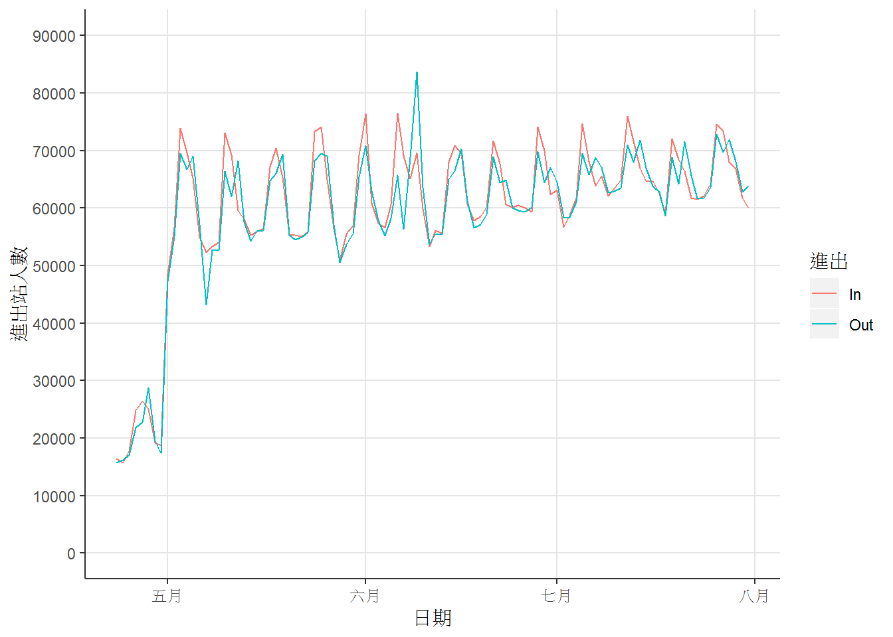 從圖形上可以觀察到5月後資料的數量級較之前大非常多，可能導致分析錯誤。
所有站點的進出人數總和是否有同樣情形？
df %>%
group_by(trnOpDate) %>%
summarise(In=sum(gateInComingCnt), Out=sum(gateOutGoingCnt)) %>%
gather(key=IO, value=Count, -trnOpDate) %>%
ggplot() +
geom_line(aes(x=trnOpDate, y=Count, color=IO)) +
scale_y_continuous(limits=c(0, 900000), breaks=seq(0, 900000, 100000)) +
labs(x="日期", y="進出站人數", color="進出") +
theme(panel.background = element_blank(),
axis.line = element_line(color="grey20"),
panel.grid.major = element_line(color="grey90"))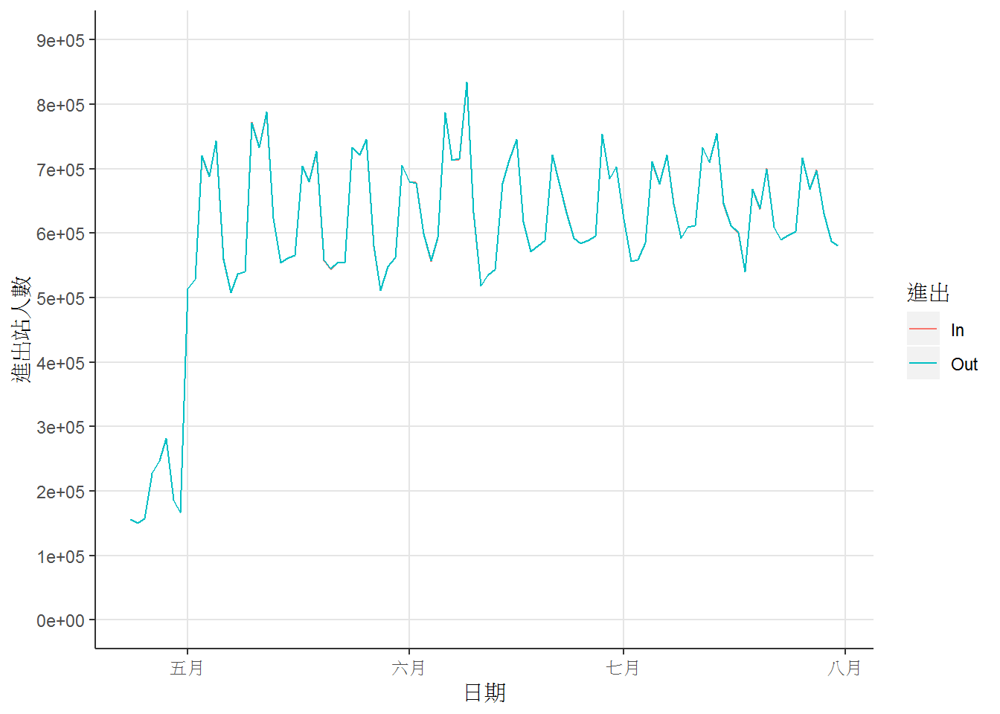
刪除五月以前的資料，再重新檢視。
df <- df %>%
filter(trnOpDate>=as.Date("2019-05-01"))
df %>%
group_by(trnOpDate) %>%
summarise(In=sum(gateInComingCnt), Out=sum(gateOutGoingCnt)) %>%
gather(key=IO, value=Count, -trnOpDate) %>%
ggplot() +
geom_line(aes(x=trnOpDate, y=Count, color=IO)) +
scale_y_continuous(limits=c(0, 900000), breaks=seq(0, 900000, 100000)) +
labs(x="日期", y="進出站人數", color="進出") +
theme(panel.background = element_blank(),
axis.line = element_line(color="grey20"),
panel.grid.major = element_line(color="grey90"))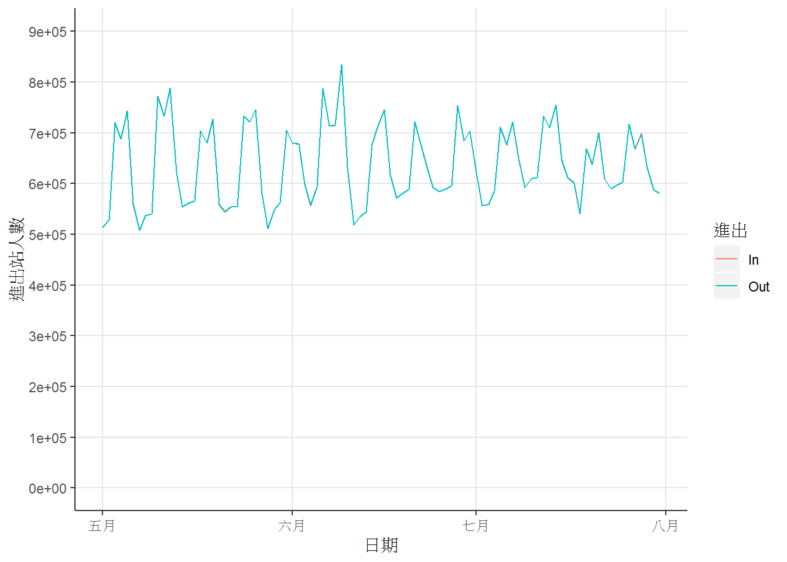
每個站點每天平均進出站人數
df %>%
group_by(staName) %>%
summarise(In=mean(gateInComingCnt), Out=mean(gateOutGoingCnt)) %>%
ungroup() %>%
arrange(desc(In))## # A tibble: 237 x 3
## staName In Out
## <chr> <dbl> <dbl>
## 1 臺北 63258. 62578.
## 2 桃園 27563. 28538.
## 3 中壢 26588. 26992.
## 4 臺南 25946. 26148.
## 5 臺中 25796. 25064.
## 6 板橋 21320. 21362.
## 7 新竹 20084. 20284.
## 8 高雄 16905. 17002.
## 9 花蓮 16868. 15639.
## 10 松山 16651. 16711.
## # ... with 227 more rows選取中等規模以上的站點(每天平均進入人數達5000人以上)
cand_sta <- df %>%
group_by(staName) %>%
summarise(In=mean(gateInComingCnt), Out=mean(gateOutGoingCnt)) %>%
ungroup() %>%
filter(In>=5000) %>%
pull(staName)從原始資料中取出中等規模以上站點的資料
df1 <- df %>%
filter(staName %in% cand_sta)7.2.4 產生站點資料特徵
站點資料特徵便是用來一組描述站點特性的資料。
根據前面的折線圖，我們可以觀察到進出站人數具有週期性變化的情形，而其週期大約是一週(一星期)。所以可能可以以一週為單位，彙整資料，避免雜訊(某一天突然增加或減少的異常值)。檢視汐科站在一週每天的進出人數分布範圍。
df1 %>%
filter(staName=="汐科") %>%
rename(In=gateInComingCnt, Out=gateOutGoingCnt) %>%
gather(key="Var", value="Count", -staName, -staCode, -trnOpDate) %>%
mutate(trnOpDateW=wday(trnOpDate, label=TRUE)) %>%
ggplot() +
geom_boxplot(aes(x=Var, y=Count)) +
scale_y_continuous(limits=c(0, 15000), breaks=seq(0, 15000, 3000)) +
labs(x="", y="進出人數") +
facet_wrap(~trnOpDateW, nrow=2) +
theme(panel.background = element_blank(),
axis.line = element_line(color="grey"))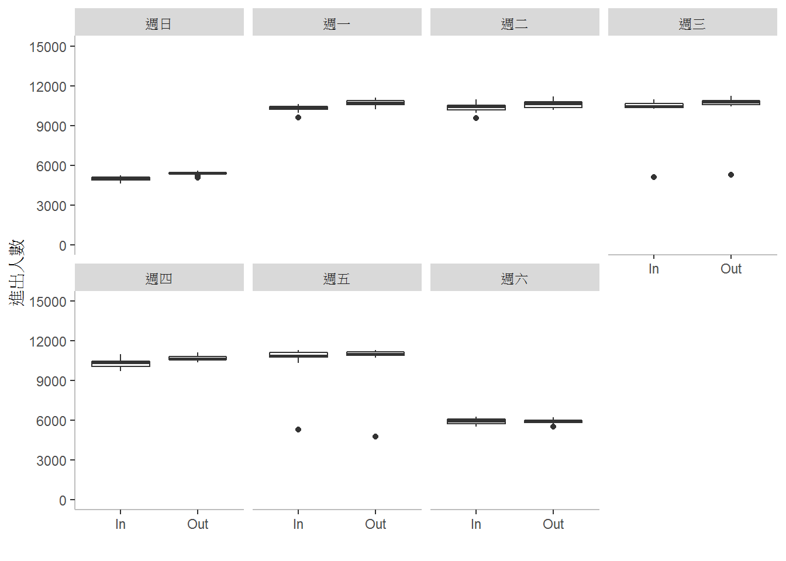
再檢視臺東站在一週每天的進出人數分布範圍。
df1 %>%
filter(staName=="臺東") %>%
rename(In=gateInComingCnt, Out=gateOutGoingCnt) %>%
gather(key="Var", value="Count", -staName, -staCode, -trnOpDate) %>%
mutate(trnOpDateW=wday(trnOpDate, label=TRUE)) %>%
ggplot() +
geom_boxplot(aes(x=Var, y=Count)) +
scale_y_continuous(limits=c(0, 15000), breaks=seq(0, 15000, 3000)) +
labs(x="", y="進出人數") +
facet_wrap(~trnOpDateW, nrow=2) +
theme(panel.background = element_blank(),
axis.line = element_line(color="grey"))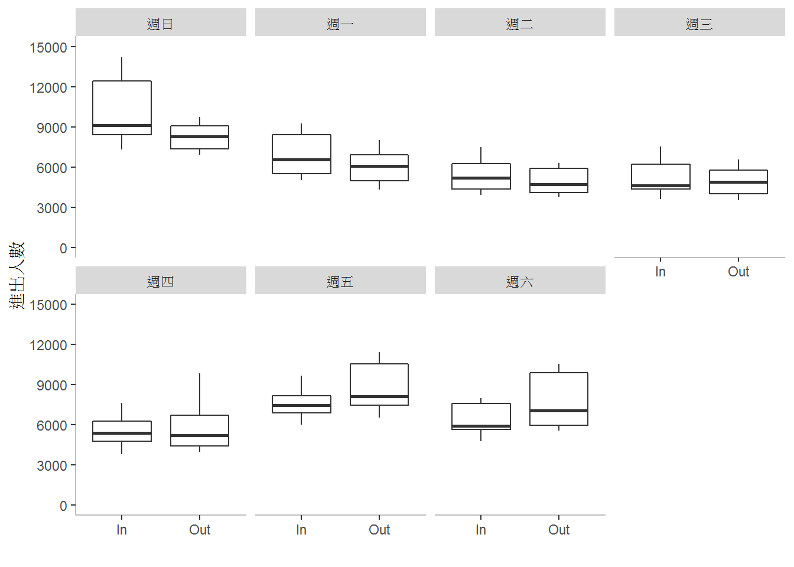
最後，檢視臺北站在一週每天的進出人數分布範圍。
df1 %>%
filter(staName=="臺北") %>%
rename(In=gateInComingCnt, Out=gateOutGoingCnt) %>%
gather(key="Var", value="Count", -staName, -staCode, -trnOpDate) %>%
mutate(trnOpDateW=wday(trnOpDate, label=TRUE)) %>%
ggplot() +
geom_boxplot(aes(x=Var, y=Count)) +
scale_y_continuous(limits=c(0, 90000), breaks=seq(0, 90000, 10000)) +
labs(x="", y="進出人數") +
facet_wrap(~trnOpDateW, nrow=2) +
theme(panel.background = element_blank(),
axis.line = element_line(color="grey"))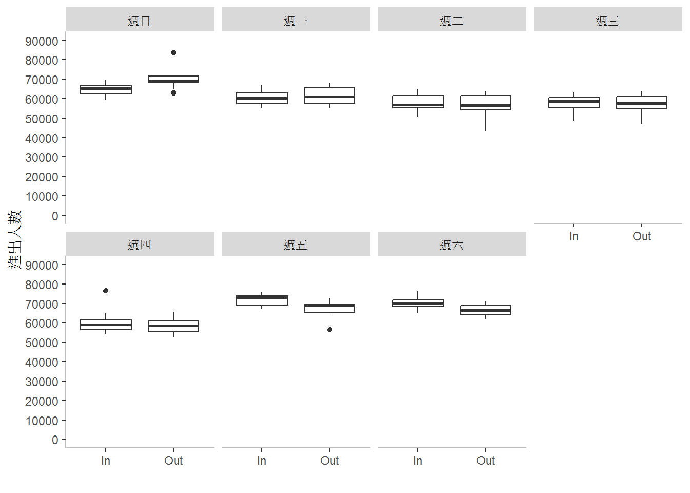
注意週日和週五、週六與平日的情形，汐科站平日進出站人數多於週日和週六，每天的進出站人數大致相同；臺東站的週五和週六出站多於進站，週日則相反；臺北站的週五和週六則是進站多於出站；且臺北和臺東的週末進出人數都多於週間平日。
首先，計算每個站點在一週中每天的進出站人數平均值(刪除前後各5%的極端值以避免極端值的影響)。接著以長條圖顯示上述的進出站人數變化現象，。
df1 %>%
mutate(trnOpDateW=wday(trnOpDate, label=TRUE)) %>%
group_by(staName, trnOpDateW) %>%
summarise(In=mean(gateInComingCnt, trim=0.05), Out=mean(gateOutGoingCnt, trim=0.05)) %>%
ungroup() %>%
gather(key=variable, value=value, -staName, -trnOpDateW) %>%
group_by(staName) %>%
mutate(value=value/sum(value)) %>%
filter(staName %in% c("汐科", "臺北", "臺東")) %>%
ggplot() +
geom_col(aes(x=trnOpDateW, y=value, fill=variable), position="dodge") +
scale_fill_brewer(palette="Dark2") +
labs(x="週", y="人數佔全週進出人數比例", fill="進出") +
facet_wrap(~staName, nrow=3) +
theme(panel.background = element_blank(),
axis.line = element_line(color="grey"),
panel.grid.major = element_line(color="grey"))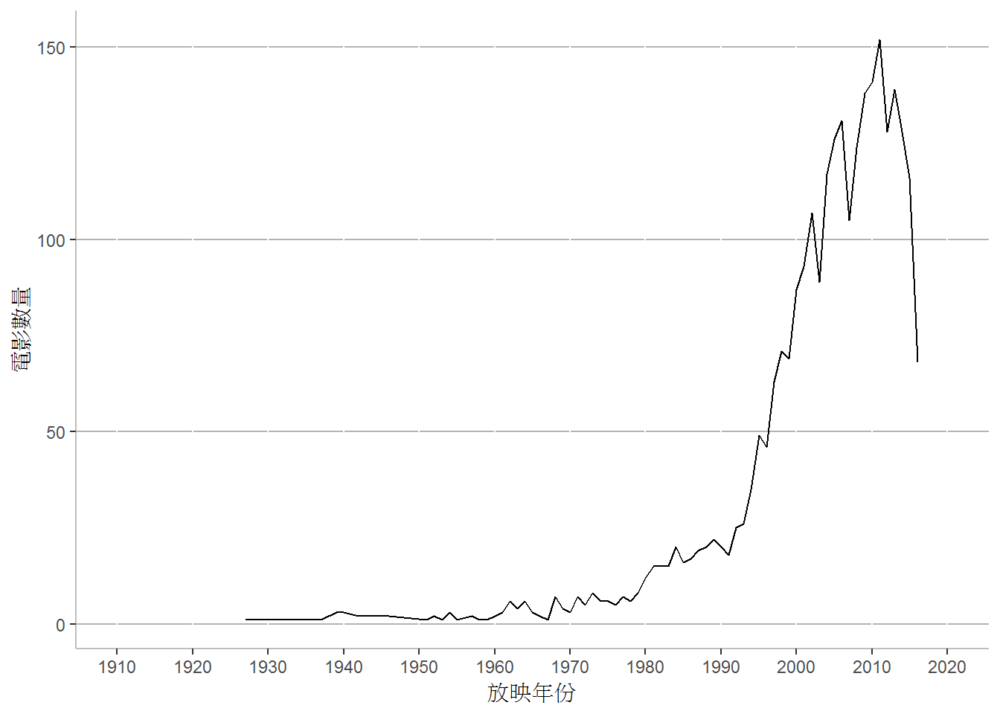
從長條圖的示意可以觀察到產生的特徵保留上述分析的特性
以下的研究即利用這個觀察到的現象將資料分群。首先產生每一個站點的資料特徵。
sta_inf <- df1 %>%
mutate(trnOpDateW=wday(trnOpDate, locale="English", label=TRUE)) %>%
group_by(staName, trnOpDateW) %>%
summarise(In=mean(gateInComingCnt, trim=0.05), Out=mean(gateOutGoingCnt, trim=0.05)) %>%
ungroup() %>%
gather(key=variable, value=value, -staName, -trnOpDateW) %>%
group_by(staName) %>%
mutate(value=value/sum(value)) %>%
ungroup() %>%
unite(temp, trnOpDateW, variable) %>%
spread(key=temp, value=value)檢視產生的資料
summary(sta_inf)## staName Fri_In Fri_Out Mon_In
## Length:36 Min. :0.07326 Min. :0.07001 Min. :0.05812
## Class :character 1st Qu.:0.07826 1st Qu.:0.07726 1st Qu.:0.06611
## Mode :character Median :0.08069 Median :0.08102 Median :0.06852
## Mean :0.08093 Mean :0.08144 Mean :0.06879
## 3rd Qu.:0.08204 3rd Qu.:0.08511 3rd Qu.:0.07155
## Max. :0.10348 Max. :0.09521 Max. :0.08118
## Mon_Out Sat_In Sat_Out Sun_In
## Min. :0.05801 Min. :0.04673 Min. :0.04661 Min. :0.03923
## 1st Qu.:0.06479 1st Qu.:0.07045 1st Qu.:0.07007 1st Qu.:0.07137
## Median :0.06820 Median :0.07724 Median :0.07856 Median :0.08247
## Mean :0.06847 Mean :0.07613 Mean :0.07654 Mean :0.08113
## 3rd Qu.:0.07028 3rd Qu.:0.08174 3rd Qu.:0.08311 3rd Qu.:0.09124
## Max. :0.08435 Max. :0.09755 Max. :0.09280 Max. :0.10927
## Sun_Out Thu_In Thu_Out Tue_In
## Min. :0.04255 Min. :0.05563 Min. :0.05244 Min. :0.05107
## 1st Qu.:0.07111 1st Qu.:0.06211 1st Qu.:0.06172 1st Qu.:0.05837
## Median :0.08142 Median :0.06532 Median :0.06537 Median :0.06318
## Mean :0.07981 Mean :0.06604 Mean :0.06601 Mean :0.06329
## 3rd Qu.:0.08954 3rd Qu.:0.07069 3rd Qu.:0.06925 3rd Qu.:0.06941
## Max. :0.10845 Max. :0.08160 Max. :0.08438 Max. :0.08146
## Tue_Out Wed_In Wed_Out
## Min. :0.04999 Min. :0.05295 Min. :0.05000
## 1st Qu.:0.05815 1st Qu.:0.05939 1st Qu.:0.05931
## Median :0.06202 Median :0.06373 Median :0.06343
## Mean :0.06317 Mean :0.06422 Mean :0.06400
## 3rd Qu.:0.06658 3rd Qu.:0.07060 3rd Qu.:0.06869
## Max. :0.08396 Max. :0.07999 Max. :0.08200取出各站點的特徵(第2到最後一個variable)，形成特徵矩陣，用來計算站點間的相似性，也就是估計矩陣的列(row)與列是否相似。
sta_inf.mat <- as.matrix(sta_inf[,2:ncol(sta_inf)])7.2.5 維度縮減
上面產生的特徵共有14個維度(dimensions)，也就是14個variables。在計算站點間的相似性之前，可以先看看是否可以用比較少的維度，便達到相近的計算結果。這個從高維度轉換成低維度的運算稱為維度縮減 (dimension reduction)，是資料探勘中相當重要的步驟。許多研究對於維度縮減提出相當多不同的方法，在此我們選用主成分分析 (principal component analysis, pca)。
將資料特徵輸入R語言的主成分分析函數prcomp()。
sta_inf.pca <- prcomp(sta_inf.mat)主成分分析產生的結果為一組與原先相同維度的矩陣，以上例而言，其結果在sta_inf.pca$x。經過主成分分析後，第一個維度的特徵(稱為PC1)是最重要的資料描述方式，其次是最二個維度的特徵(PC2)，依序下來為PC3、PC4、…。
查看主成分分析產生結果的解釋
summary(sta_inf.pca)## Importance of components:
## PC1 PC2 PC3 PC4 PC5
## Standard deviation 0.03016 0.008704 0.006323 0.004882 0.003679
## Proportion of Variance 0.84913 0.070720 0.037320 0.022250 0.012640
## Cumulative Proportion 0.84913 0.919850 0.957170 0.979420 0.992050
## PC6 PC7 PC8 PC9 PC10
## Standard deviation 0.001855 0.00142 0.00128 0.0007949 0.0005517
## Proportion of Variance 0.003210 0.00188 0.00153 0.0005900 0.0002800
## Cumulative Proportion 0.995260 0.99715 0.99867 0.9992600 0.9995500
## PC11 PC12 PC13 PC14
## Standard deviation 0.0004753 0.0004262 0.0002784 1.031e-17
## Proportion of Variance 0.0002100 0.0001700 0.0000700 0.000e+00
## Cumulative Proportion 0.9997600 0.9999300 1.0000000 1.000e+00。其中的Standard deviation是只用這個維度上的特徵的標準差，可以利用標準差計算變異數所佔的比例(Proportion of Varience)，以第一個維度(PC1)來說，標準差是0.03016 ，經過計算後，變異數所佔的比例為0.84913，也就是只用第一個維度的特徵便可以表現0.84913的訊息，因此第一個維度是最重要的資料描述方式。第二個維度的變異數所佔的比例為0.070720，比第一個維度小，但比其他維度大，所以在資料描述方式上，它是第二重要的。以下依此類推。並且前三個維度(PC1、PC2和PC3)的變異數比例累積(Cumulative Proportion)為0.957170，也就是說只使用這三個維度便可以表現整個資料訊息的0.957170。所以，以下的分析將使用前三個維度。
將各個維度的變異數比例累積畫成圖形來看。
data.frame(dim_order=seq(1, ncol(sta_inf.mat)),
var=sta_inf.pca$sdev^2) %>%
mutate(prop_varex=var/sum(var)) %>%
mutate(cum_prop_varex=cumsum(prop_varex)) %>%
ggplot(aes(x=dim_order, y=cum_prop_varex)) +
geom_line() +
geom_point() +
scale_x_continuous(limits=c(1, ncol(sta_inf.mat)), breaks=seq(1, ncol(sta_inf.mat), 1), minor_breaks = NULL) +
scale_y_continuous(limits=c(0, 1), breaks=seq(0, 1, 0.1)) +
labs(x="維度", y="累積變異數比例") +
theme(panel.background = element_blank(),
axis.line = element_line(color="gray"),
panel.grid.major = element_line(color="gray70"),
panel.grid.minor = element_line(color="gray90"))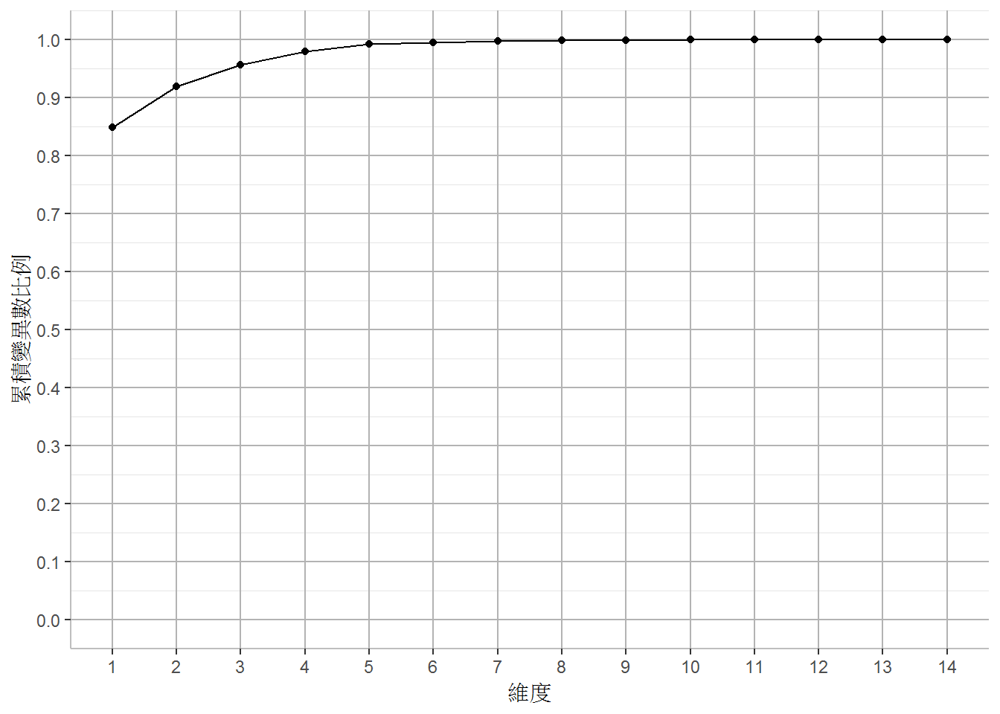
取出經過前三個維度的資料。
sta_inf.pf <- sta_inf.pca$x[, 1:3]7.2.6 將站點依據彼此距離視覺化
本節中將依據站點彼此間的相似性，將各站點映射到圖形上，使相似性較大的站點在圖形上的距離較近
載入映射演算法套件
library(Rtsne)## Warning: package 'Rtsne' was built under R version 3.5.3計算站點之間的距離(相似性可以視為距離的負值，相似性愈大，距離愈小)。dist()提供矩陣的每列之間各種距離的計算方式，這裡我們採用內定而且是最常用的Euclidean distance(歐基里得距離)。
sta_d <- dist(sta_inf.pf)依據站點特徵之間的歐基里得距離計算站點映射在圖形上的位置
tsne_out <- Rtsne(sta_d, perplexity=10, theta=0.0, is_distance=TRUE)將站點加上映射的坐標後，依據其坐標畫成圖形
sta_inf %>%
select(staName) %>%
mutate(x=tsne_out$Y[,1], y=tsne_out$Y[,2]) %>%
ggplot() +
geom_text(aes(x=x, y=y, label=staName), size=3) +
coord_fixed()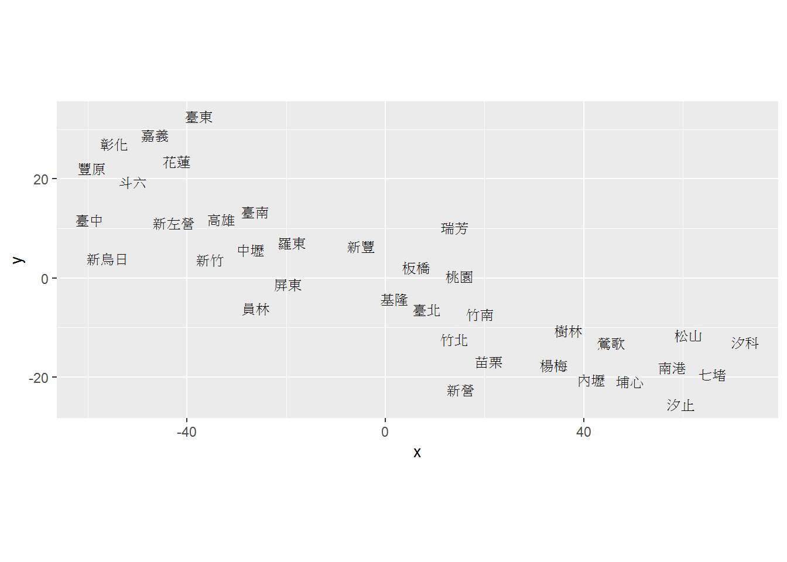
7.3 站點分群
載入分群演算法套件
library(apcluster)## Warning: package 'apcluster' was built under R version 3.5.3##
## Attaching package: 'apcluster'## The following object is masked from 'package:stats':
##
## heatmaps1 <- -as.matrix(sta_d)res <- apcluster(s1)for (i in seq(length(res@clusters))) {
print(paste("Cluster", i))
print(sta_inf$staName[res@clusters[[i]]])
}## [1] "Cluster 1"
## [1] "內壢" "埔心" "楊梅" "樹林" "鶯歌"
## [1] "Cluster 2"
## [1] "汐科"
## [1] "Cluster 3"
## [1] "竹北" "竹南" "板橋" "苗栗" "桃園" "基隆" "新營" "新豐" "瑞芳" "臺北"
## [1] "Cluster 4"
## [1] "七堵" "汐止" "松山" "南港"
## [1] "Cluster 5"
## [1] "新烏日"
## [1] "Cluster 6"
## [1] "斗六" "花蓮" "嘉義" "彰化" "臺中" "臺東" "豐原"
## [1] "Cluster 7"
## [1] "中壢" "屏東" "員林" "高雄" "新左營" "新竹" "臺南" "羅東"sta.cl <- integer(nrow(sta_inf))
for (i in seq(length(res@clusters))) {
sta.cl[res@clusters[[i]]] <- i
}sta_inf %>%
select(staName) %>%
mutate(x=tsne_out$Y[,1], y=tsne_out$Y[,2]) %>%
mutate(cl=factor(sta.cl)) %>%
ggplot() +
geom_text(aes(x=x, y=y, label=staName, color=cl), size=3) +
scale_x_continuous(limits=c(min(tsne_out$Y[,1])-1, max(tsne_out$Y[,1])+1)) +
scale_y_continuous(limits=c(min(tsne_out$Y[,2])-1, max(tsne_out$Y[,2])+1)) +
scale_color_brewer(palette = "Dark2") +
theme(panel.background = element_blank(),
legend.position = "none",
axis.line = element_line(color="grey"))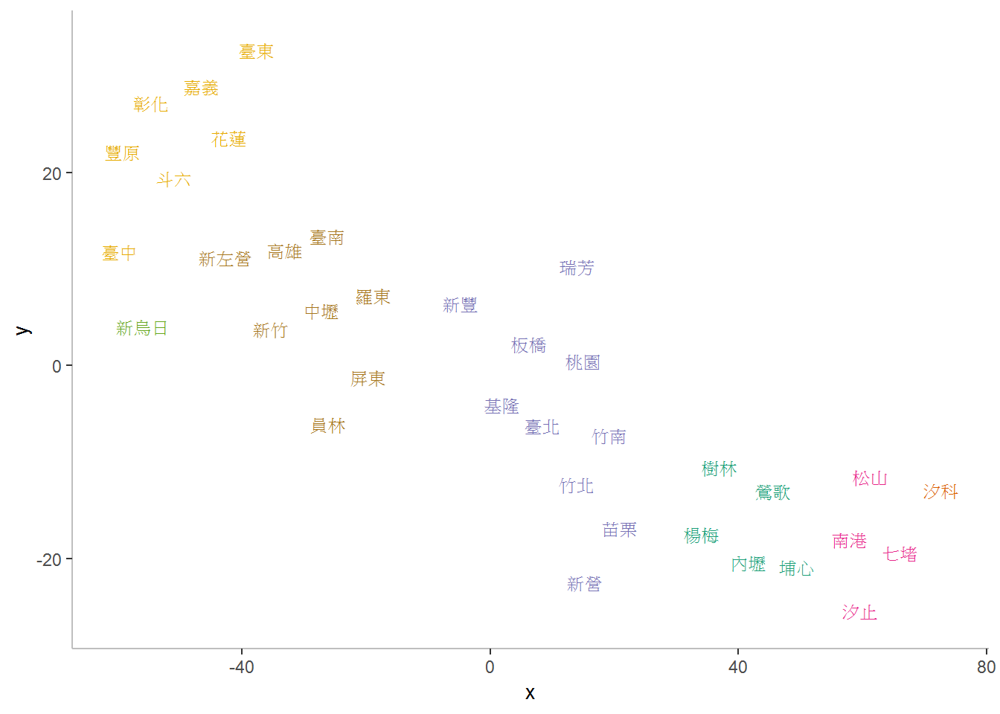
exemplars <- sta_inf %>%
slice(res@exemplars) %>%
pull(staName)
df1 %>%
mutate(trnOpDateW=wday(trnOpDate, label=TRUE)) %>%
filter(staName %in% exemplars) %>%
group_by(staName, trnOpDateW) %>%
summarise(In=mean(gateInComingCnt), Out=mean(gateOutGoingCnt)) %>%
ungroup() %>%
gather(key=variable, value=value, -staName, -trnOpDateW) %>%
group_by(staName) %>%
mutate(value=value/sum(value)) %>%
ggplot() +
geom_col(aes(x=trnOpDateW, y=value)) +
facet_grid(staName~variable)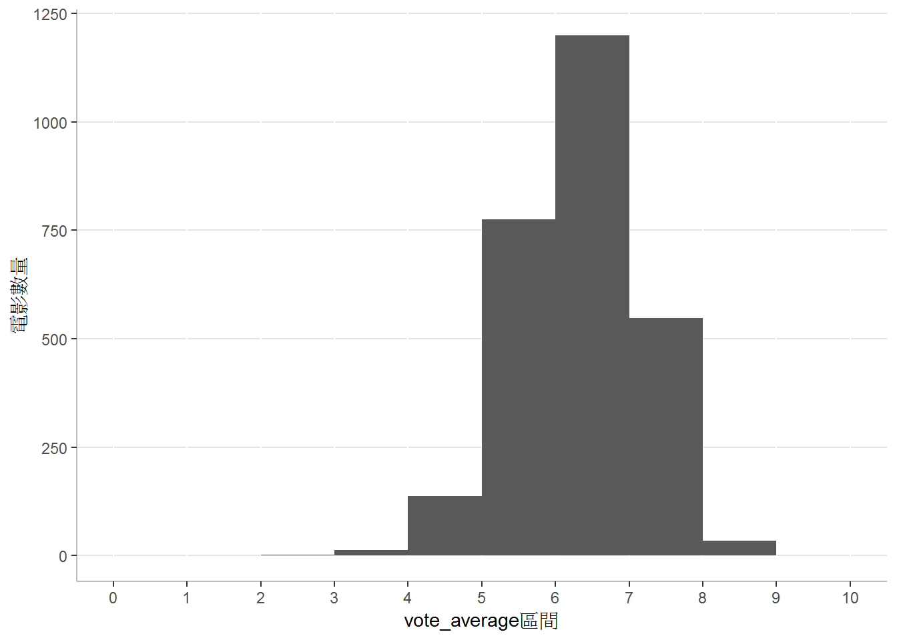